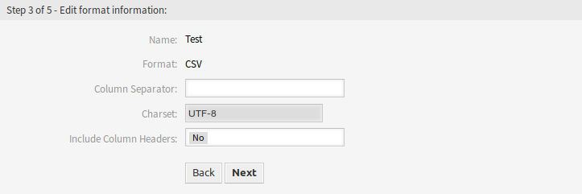

导入/导出¶
使用此屏幕可以创建导入和导出模板。 导入/导出模板管理屏幕位于 系统管理 组的 导入/导出 模块中。

导入/导出模板管理屏幕
管理导入/导出模板¶
若要创建一个新模板：
- 点击左侧边栏中的 添加模板 按钮。
- 填写所有步骤中的必填字段。
- 点击 完成 按钮。

创建新导入/导出模板屏幕
若要编辑一个模板：
- 点击模板列表中的一个模板。
- 修改所有步骤中的必填字段。
- 点击 完成 按钮。

编辑导入/导出模板屏幕
若要删除一个模板：
- 点击模板列表中的垃圾桶图标。
- 点击 确认 按钮。

删除导入/导出模板屏幕
若要导入基于一个模板的数据：
- 点击模板列表中的 导入 链接。
- 点击 浏览… 按钮并选择一个 CSV 文件。
- 点击 开始导入 按钮。

导入数据屏幕
若要导出基于一个模板的数据：
- 点击模板列表中上 导出 链接。
- 在计算机中选择一个位置以保存
Export.csv文件。
导入/导出模板设置¶
添加此资源时，可以使用以下设置。 标有星号的字段是必填字段。
注解
导入/导出软件包是独立的。这意味着，如果不导入或导出任何配置项，则以下设置可能不同。
编辑公共信息¶
编辑公共信息屏幕
- 名称 *
- 此资源的名称。 可以在此字段中输入任何类型的字符，包括大写字母和空格。 名称将显示在概览表中。
- 对象 *
- 选择要导入或导出的对象类型。
- 格式 *
- 选择导入和导出格式。
- 有效性 *
- 设置此资源的有效性。 如果此字段设置为 有效，则每个资源即可仅在 OTRS 中使用。 将此字段设置为 无效 或 临时无效 将禁止此资源的使用。
- 注释
- 向此资源添加附加信息。 为了更加清晰，建议始终将此字段填充为带有完整句子的资源描述。
编辑对象信息¶

编辑对象信息屏幕
- 名称
- 这是来自上一步中的只读字段。使用 后退 按钮进行编辑。
- 对象
- 这是来自上一步中的只读字段。使用 后退 按钮进行编辑。
- 类 *
- 选择需要受导入和导出影响的类。
- 一个元素的最大数目 *
- 指定一个项目可以有多少个条目。
- 空字段表示保持当前值
- 如果空字段应将数据保存在 OTRS 中，则选中此复选框。否则，数据将被空白值覆盖。
编辑格式信息¶

编辑格式信息屏幕
- 名称
- 这是来自上一步中的只读字段。使用 后退 按钮进行编辑。
- 格式
- 这是来自上一步中的只读字段。使用 后退 按钮进行编辑。
- 列分隔符 *
- 选择CSV文件的列分隔符。
- 字符集
- 选择CSV文件的字符编码。
- 包括列标题
- 指定是否应包含列标题。
编辑搜索信息¶

编辑搜索信息屏幕
- 模板名称
- 这是来自上一步中的只读字段。使用 后退 按钮进行编辑。
- 按搜索限制导出
- 您可以为所选类的每个属性添加搜索项，以限制导入和导出功能。 可能的字段列在此字段下方。
注解
其他字段来自后端驱动程序，可能会有所不同，具体取决于要导入或导出的已使用对象。